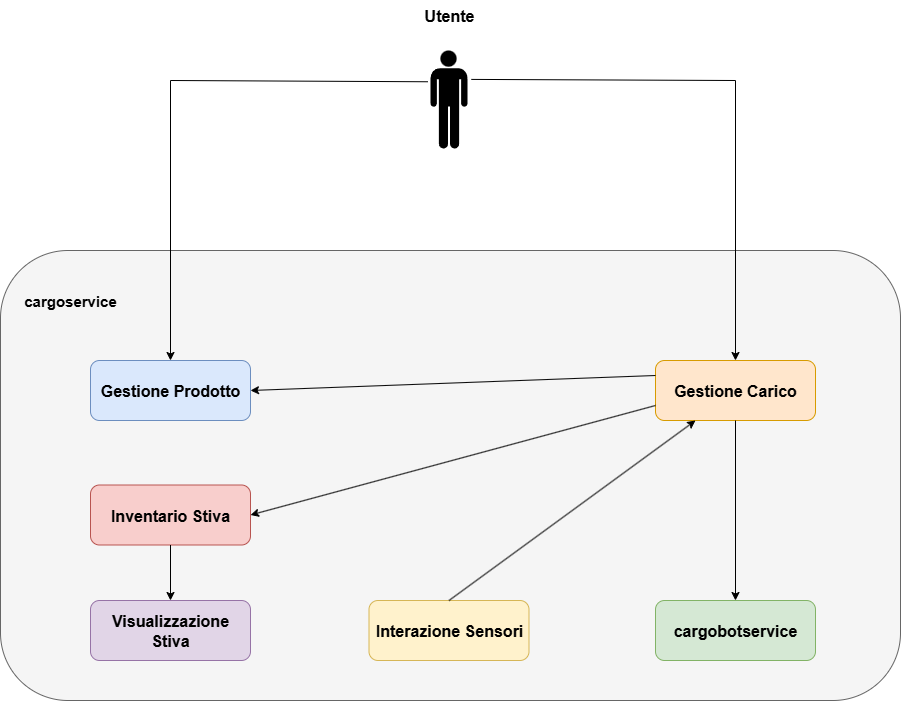

Contesti

Gestione Carico
Questo contesto si occupa di gestire la ricezione delle richieste di carico. Controlla che il peso del container
non ecceda la capacità massima, che ci siano slot disponibili, e di restituire lo slot dove il container con un
certo PID dovrà essere inserito. Inoltre, gestisce lo stato del processo di carico per una specifica richiesta,
rimanendo in attesa che il container venga consegnato sulla porta di input, e si occupa di segnalare quando un
nuovo carico può essere elaborato. Il contesto è fondamentale in quanto è responsabile della gestione di tutto
il processo di carico, determinando quando accettare o rifiutare un'operazione.
Gestione Prodotto
Questo contesto si occupa della gestione del ciclo di vita dei prodotti destinati al carico sulla nave. In fase
di registrazione, a ogni nuovo prodotto viene assegnato un identificativo univoco (PID), il suo peso e se
necessario, ulteriori informazioni non specificate nei requisiti del cargoservice, ma rilevanti per i sistemi
esterni (ad esempio: tipo di merce, dimensioni, quantità, ecc.). Questo contesto permette al sistema
cargoservice di reperire le informazioni sul prodotto attraverso il suo identificativo univoco.
Inventario Stiva
Questo contesto gestisce lo stato fisico della stiva, monitorando l'occupazione degli slot, il peso totale dei
container presenti, e associando a ciascuno di essi l'identificativo univoco (PID) del prodotto contenuto. È
inoltre responsabile della verifica della disponibilità di slot liberi, consentendo al sistema di rifiutare
eventuali richieste di carico nel caso in cui non vi sia spazio sufficiente.
Visualizzazione Stiva
Questo contesto si occupa di aggiornare l'interfaccia utente mostrando lo stato corrente della stiva. Avere un
contesto separato che si occupa solo della visualizzazione dello stato della stiva è utile al fine di separare i
compiti.
Interazione Sensori
Questo contesto è incaricato della gestione del'interfaccia con i dispositivi fisici, in particolare con il
sensore sonar collocato presso l'IOPort. Le sue responsabilità includono la lettura dei dati provenienti dal
sensore, l'interpretazione di tali dati per rilevare la presenza di un container, e la gestione di eventuali
condizioni anomale del sensore (in caso di guasto e.g.). Inoltre, potrebbe essere coinvolto nell'interazione con
il cargorobot, per segnalare l'avvenuta movimentazione del container. Anche se i requisiti non lo specificano
esplicitamente, la necessità di "garantire che il container sia posizionato" suggerisce l'esistenza di un
meccanismo di validazione di coordinamento tra questo ed il robot.
Cargobotservice
Si occupa di comandare il robot. Per interagire col robot bisogna
rivolgersi a questo contesto.
Interazioni
Gestione Carico
Questo contesto si occupa di interagire con i seguenti contesti:
-
Gestione Prodotto: In modo da permettere di recuperare le informazioni riguardanti il prodotto
registrato nel container.
-
Inventario Stiva: Per controllare che ci siano slot disponibili, per registrare un container
nello slot in cui verrà caricato e per verificare che il peso dei container nella stiva non ecceda il
limite massimo.
-
CarboBotService: Per indicare al robot lo slot in cui deve caricare il container.
Inventario Stiva
Questo contesto si occupa di interagire con il contesto “Visualizzazione Stiva” fornendo le informazioni
necessarie
per la rappresentazione dei singoli slot del sistema.
Interazione Sensori
Questo contesto interagisce con il contesto “Gestione Carico” per comunicare la presenza sull'ioport di un
container.
Testing
|
ID
|
Titolo
|
Tipo
|
Descrizione
|
Input
|
Output
|
|
T01
|
Univocità del PID
|
Unit Test
|
Gestione Prodotto si occupa di registrare un prodotto e di assegnarli un PID univoco
|
Prodotto da registrare
|
PID univoco
|
|
T02
|
Salvataggio del prodotto
|
Unit Test
|
Gestione Prodotto si occupa di registrare correttamente il prodotto
|
Prodotto da registrare
|
Entry del prodotto
|
|
T03
|
Capacità massima
|
Integration Test
|
Gestione Carico si interfaccia con Inventario Stiva per controllare che la capacità del container non
ecceda la capacità massima
|
PID container
|
Accettazione o rifiuto della richiesta
|
|
T04
|
Disponibilità di slot
|
Integration Test
|
Gestione Carico controlla che ci siano slot disponibili
|
PID container
|
Accettazione o rifiuto della richiesta
|
|
T05
|
Gestione delle richieste di carico
|
Unit Test
|
Gestione Carico durante l'attesa che il container venga consegnato all'ioport non accetta richieste
dall'esterno
|
PID container
|
Rifiuto della richiesta
|
|
T06
|
Fallimento del sonar
|
Integration Test
|
Nel caso la distanza misurata dal sonar sia maggiore di DFREE per più di tre secondi, Interazione
Sensori dovrà interrompere il sistema, segnalando l'anomalia a Gestione Carico, e accendere
il LED
|
D (> DFREE)
|
Interruzione dell'attività e accensione del LED
|
|
T07
|
Ripristino del sistema
|
Integration Test
|
Nel caso la distanza misurata dal sonar sia minore o uguale di DFREE, Interazione Sensori dovrà
comunicare a Gestione Carico di ripristinare il sistema
|
D (<= DFREE) |
Ripristino dell'attività
|
|
T08
|
Corretto funzionamento sonar
|
Integration Test
|
Interazione Sensori dovrà segnalare a Gestione Carico l'arrivo di un container sull'ioport in modo da
poter avviare la procedura di carico
|
Container sull'ioport
|
Avvenuta segnalazione a Gestione Carico
|
|
T09
|
Comunicazione dello slot di scarico del container
|
Integration Test
|
Gestione Carico dovrà comunicare a Cargobotservice l'identificativo dello slot in cui il container
presente sull'ioport dovrà essere scaricato.
|
Container sull'ioport
|
Identificativo dello slot
|
Modello delle macro-parti del sistema
I componenti forniti dal committente sono:
I componenti che dovranno essere sviluppati sono:
- Gestione Prodotto
- Gestione Carico
- Inventario Stiva
- Visualizzazione Stiva
- Interazione Sensori
Piano di lavoro
Il piano di lavoro prevede l'implementazione dei contesti legati al core-business, ovvero gestioneCarico,
intentarioStiva e gestioneProdotto. In questo modo sarebbe possibile proporre un'architettura eseguibile e funzionante,
procedendo poi allo sviluppo degli altri componenti associati alle funzionalità di contorno. In questo Sprint si prevede
l'implementazione di un sottoinsieme mirato dei casi di test precedentemente discussi, con lo scopo di validare il
corretto funzionamento del core-business del sistema. In particolare, verranno implementati i test relativi alla
gestione dei prodotti, alla valutazione delle richieste di carico e alla gestione dello stato fisico della stiva, in
quanto sono direttamente connessi ai contesti da realizzare. I testi selezionati per questo Sprint sono:
- T01 - Univocità del PID
- T02 - Salvataggio del prodotto
- T03 - Capacità massima
- T04 - Disponibilità di slot
- T05 - Gestione delle richieste di carico